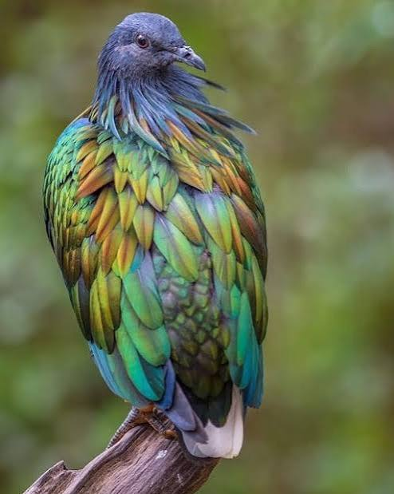

Nicobar Pigeons can grow nearly a foot-and-a-half in legth and weigh on to two pounds and live up to 20 years with human care but in the wild the nicobar pigeon only lives for 12 years these birds are born with dull colors and develope their beautiful rainbow feathers their long neck feathers are called hackles and add to their vibrant appearance. While the nicobar pigeon can fly it spends most of its time on the forest floor because the food they eat it primarly don there and this food is seeds, berries, insects and nuts their strong beaks are very useful for cracking hard nuts.
